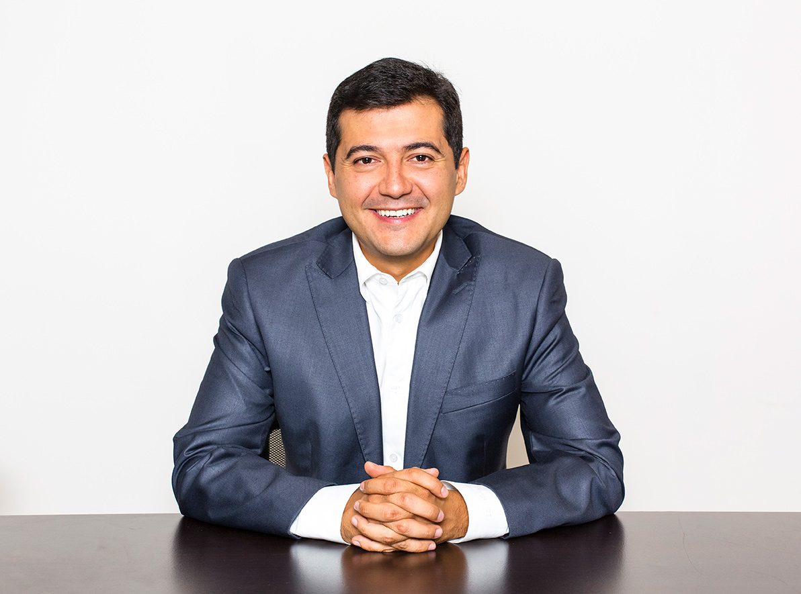

 Nací el 29 de enero de 1980, mi mamá Maricela Romo Padilla y mi papá Alfonso Silva Lucio, quienes me formaron en valores familiares, el trabajo, constante educación y amor a la patria.
Defino a mi madre como la persona que me enseñó a poner los pies sobre la tierra y caminar, y a mi padre como el que me enseñó a abrir las alas y volar.
Mis hermanos Maricela y Raymundo, ambos abogados de profesión y con quienes comparto el sueño de un mundo mejor.
Soy aficionado a la literatura, la historia y los viajes, las tres maneras de conocer el mundo y sus habitantes.
Formo parte de la Asociación Civil Barro Jaguar, la cual es pionera en la difusión y conservación de la biodiversidad a través de la fotografía. También soy miembro de la Fundación para el Desarrollo “Coatlicue”, dedicada al desarrollo de los pueblos indígenas de México, la preservación y difusión de su cultura.
Durante la secundaria y preparatoria acudí con frecuencia a la biblioteca del [Instituto de Artes Gráficas de Oaxaca] (http://institutodeartesgraficasdeoaxaca.blogspot.mx/), donde desde la autoformación conocí de historia, la literatura y participé en diversos talleres de práctica poética.
Estudié la Licenciatura en Derecho y Ciencias Sociales en la Universidad Autónoma Benito Juárez de Oaxaca, y posteriormente, cursé la maestría en Derecho en la Universidad de Columbia en la ciudad de Nueva York.
Estas dos visiones sociales y académicas me han permitido contrastar la realidad nacional y la internacional aprendiendo de las fortalezas y retos que se tienen en México y el mundo.
He cursado distintos diplomados, entre los que destaca el curso de gestión para la ejecución de proyectos, impartido por el ILPES/CEPAL en Santiago de Chile, así como también el curso de Inglés para propósitos jurídicos en la escuela de educación continua en la Universidad de Columbia.
Soy catedrático de la Facultad de Derecho y Ciencias Sociales de la UABJO, actividad que considero indispensable para mantenerme con los conocimientos vigentes y en permanente contacto con la realidad que representan los estudiantes.
2008 - A LA FECHA | NOTARIO AUXILIAR
NOTARÍA 48 DEL ESTADO DE OAXACA
Elaboración y autorización de instrumentos públicos. Establecimiento de procesos simplificados para asegurar la correcta función de la Notaría.
2010 - A LA FECHA | CATEDRÁTICO
UNIVERSIDAD AUTÓNOMA BENITO JUÁREZ DE OAXACA
Impartición de cátedra. Organización de clínicas jurídicas para la práctica de los estudiantes.
2010 - 2012 | DIRECTOR GENERAL DE NOTARÍAS
GOBIERNO DEL ESTADO DE OAXACA
Supervisión de la función notarial a los 84 Notarios Públicos del Estado. Se inició la modernización de la preservación física y electrónica del Archivo General de Notarias. Paralelamente auxiliamos en la elaboración del proyecto de Reforma Constitucional que marca un hito en la nueva manera de organizar los contrapesos de los Poderes Públicos del Estado de Oaxaca.
DIC 2006 - ENE 2008 | REGIDOR DE DERECHOS HUMANOS
Discusión y aprobación de las ordenanzas municipales así como del Estado de la Administración Pública Municipal. Como Presidente de la Comisión de Derechos Humanos, tuve la responsabilidad de instruir los procesos de presuntas violaciones derivados de los conflictos del 2006.
ENE 2005 - NOV 2006 | ASESOR JURÍDICO
LEGISLATURA DEL ESTADO DE OAXACA
Elaboración y discusión en comisiones de diversos proyectos de leyes y reformas a la Constitución Local, para ponerlos a consideración de los legisladores.
ENE 2004 - ENE 2005 | DIRECTOR DE ATENCION CIUDADANA
Diseño e implementación del sistema de recepción, canalización y seguimiento de las solicitudes de los ciudadanos con respecto a los servicios públicos municipales.